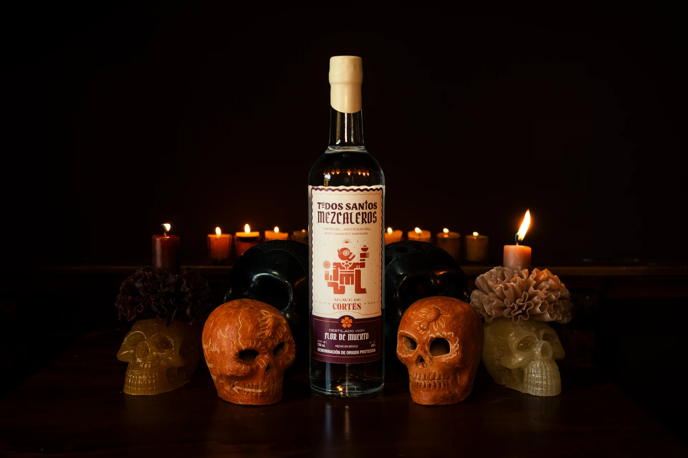
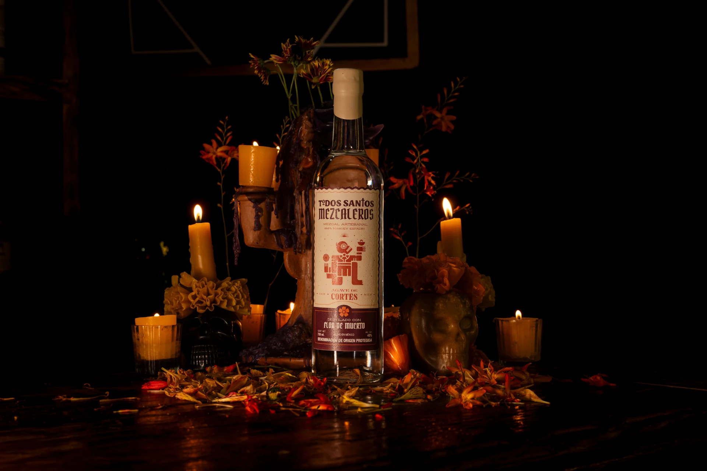
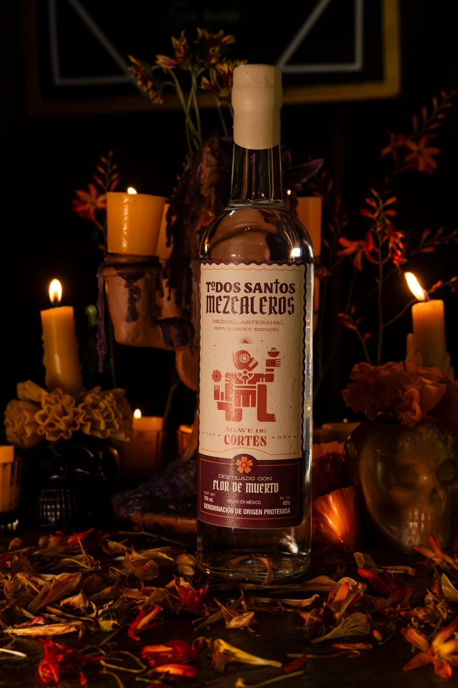
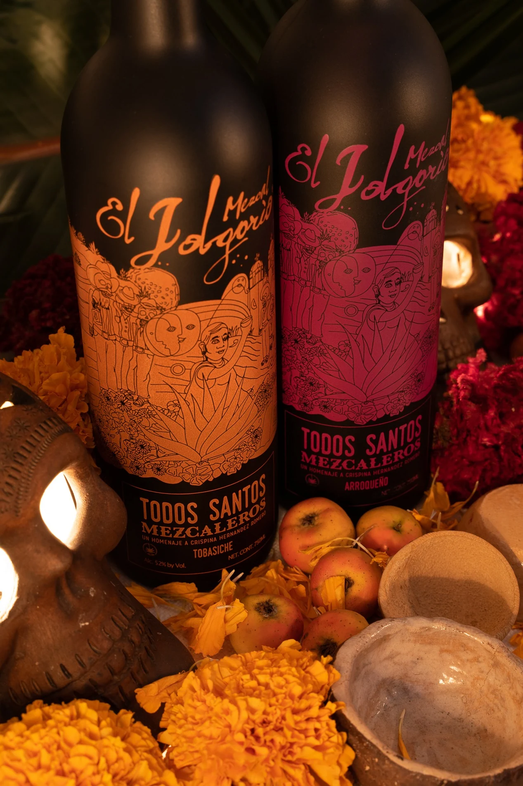

Un Mezcal Arroqueño, destilado por Tío Pedro Vásquez, llevó al mundo el espíritu de Dixeebe —gratitud y amor en zapoteco— para honrar a Crispina Hernández.
Nos movemos entre
mundos y emociones.

Nuestra historia
Todos Santos Mezcaleros no solo celebra a quienes nos guiaron desde la tierra, sino que también fortalece los lazos entre generaciones, lo tangible y lo espiritual.
Cada botella es una ofrenda líquida que honra la memoria, la identidad y el espíritu perdurable de Oaxaca.

LOTE EXCLUSIVO · 2026
Edición 2026
Esta edición rinde homenaje a la Flor de Muerto, símbolo de una de las tradiciones más profundas de Oaxaca: celebrar la vida a través de la memoria.
En Santiago Matatlán, el Maestro Mezcalero Ezequiel Ruiz Bautista transforma esta flor en una expresión singular del mezcal. El carácter del Maguey Espadín se encuentra con las notas florales, aromáticas y sutilmente herbales de la Flor de Muerto, dando vida a un destilado profundo, elegante y lleno de carácter.
Una edición creada para honrar nuestras raíces y mantener viva una tradición que, generación tras generación, encuentra nuevas formas de contarse.
- Maestro Mezcalero
- Ezequiel Ruiz Bautista
- Maguey
- Espadín
- Destilado con
- Flor de Muerto
- Lote exclusivo
- 2026

Nuestro Origen
Inspiradas en la festividad de Todos Santos, estas ediciones comenzaron rindiendo tributo a dos figuras esenciales del mezcal: Crispina Hernández Romero, maestra mezcalera y madre de Rolando Cortés(Fundador de Casa Cortés), y Rafael Méndez Cruz, maestro mezcalero de San Luis del Río.

El Mezcal Coyote de Régulo Martínez Parada nació para recordar a Rafael Méndez. Todo lo recaudado se destinó a construir un parque en su comunidad, manteniendo viva su memoria.
Un ensamble de Espadín y Mexicano Barril, destilado con Flor de Cempasúchil, llevó esta tradición a una nueva expresión, donde el mezcal y la memoria volvieron a encontrarse.
Una nueva edición para honrar nuestras raíces y celebrar la vida a través de la memoria.
TODOS SANTOS MEZCALEROS · 2026
La memoria
también se bebe.
Descubre la edición destilada con Flor de Muerto.
Comprar en tienda →